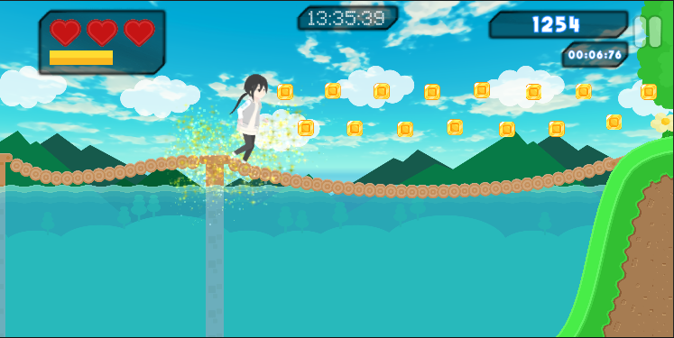
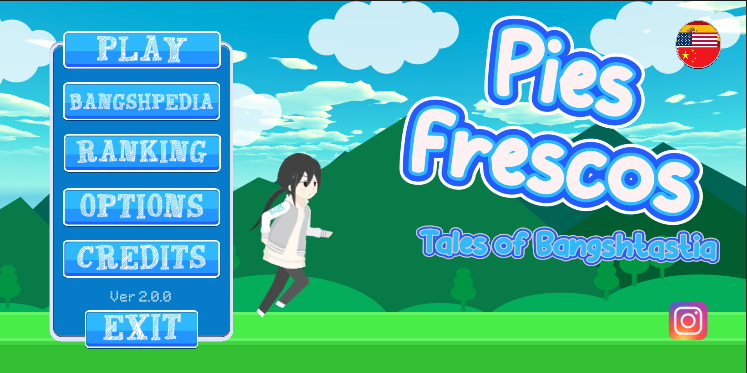
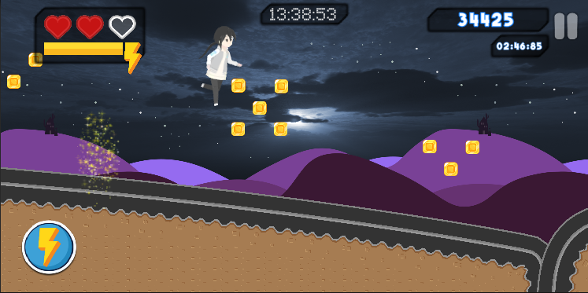
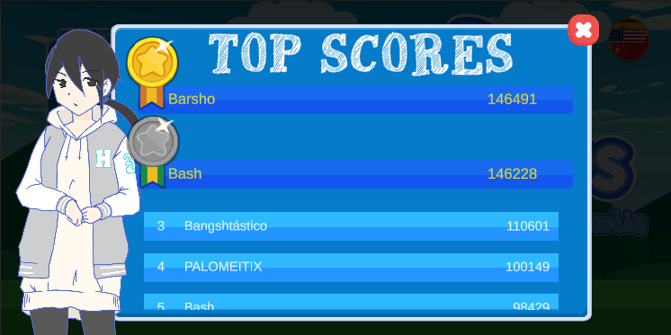

Choose Your Path
Accompany Ero on her bangshtastic adventure full of obstacles, multi-layered screens and dangers that keep stacking the further you go.


Feel the rush of a haunted runner that never slows down. Neon dunes, dark cemeteries and crunchy grass fields blend into a single frantic journey where jumping, sliding and reacting fast are the only rules.

Accompany Ero on her bangshtastic adventure full of obstacles, multi-layered screens and dangers that keep stacking the further you go.

Will she accomplish her task? Only you decide. Chain flawless runs, share your highest score with your crew and keep the rivalry alive.

The game never ends, only your determination does. Push your limits and see how far you can run in this infinite pixel adventure.